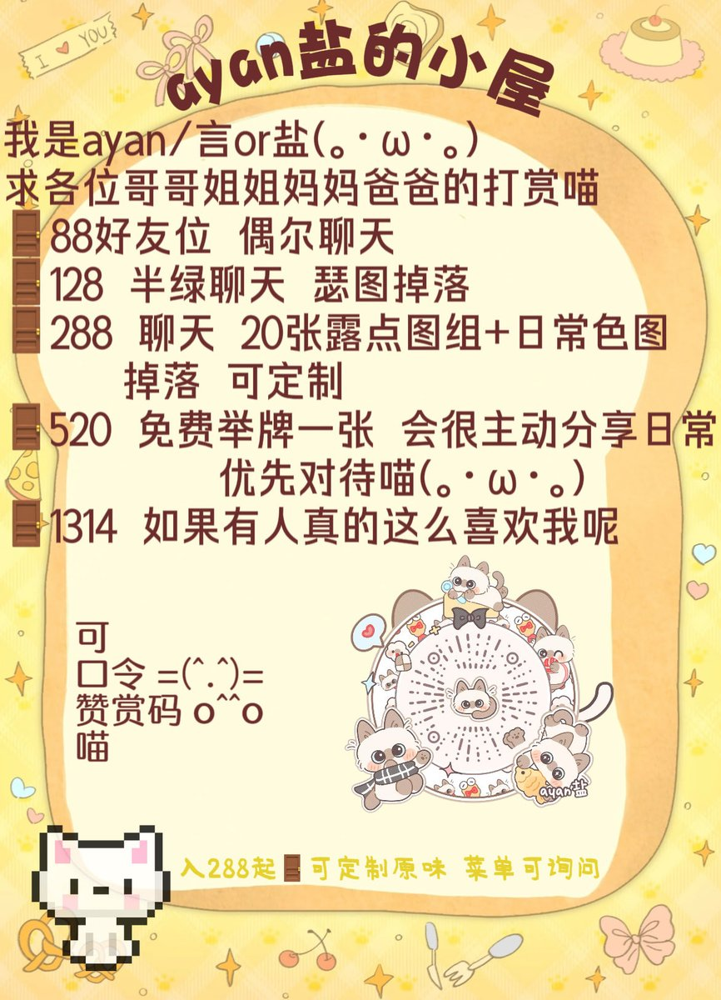

小鹽
@shiotelya
RT @lovekanggg: 🤍俺是ayan言 只是萌萌的07宝宝一只喵
(｡･ω･｡)喜欢大家来投喂我 我会爱你们的集穷苦为一身的贫民｜每天携带家中一小鼠沿网络乞讨中🥺
🤍双相治疗中｜说话神经质｜喜欢一切可爱事物
欢迎宝宝们来互fo 寻找前世记忆中 #门槛妹 #金主
*↟⍋…

请把我放在盐里
@lovekanggg
🤍俺是ayan言 只是萌萌的07宝宝一只喵
(｡･ω･｡)喜欢大家来投喂我 我会爱你们的集穷苦为一身的贫民｜每天携带家中一小鼠沿网络乞讨中🥺
🤍双相治疗中｜说话神经质｜喜欢一切可爱事物
欢迎宝宝们来互fo 寻找前世记忆中 #门槛妹 #金主
*↟⍋*↟ https://t.co/7Tsh7Gia9L